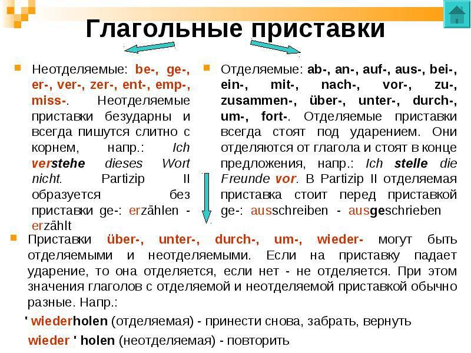
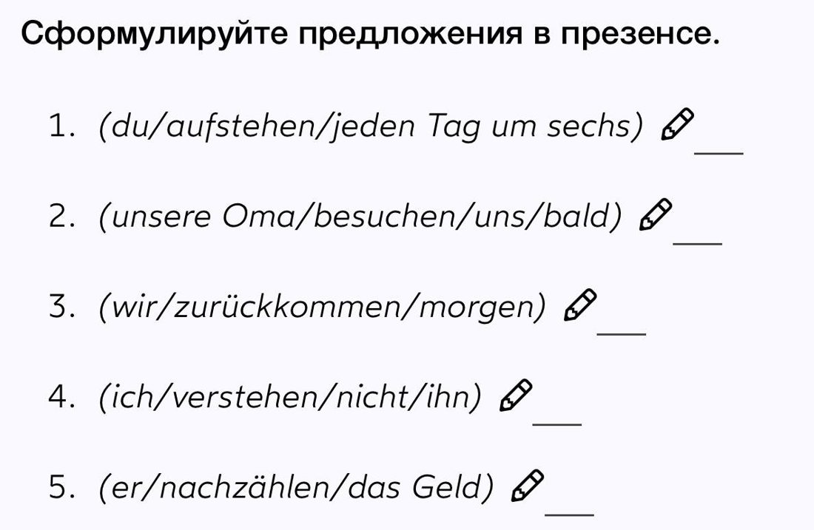
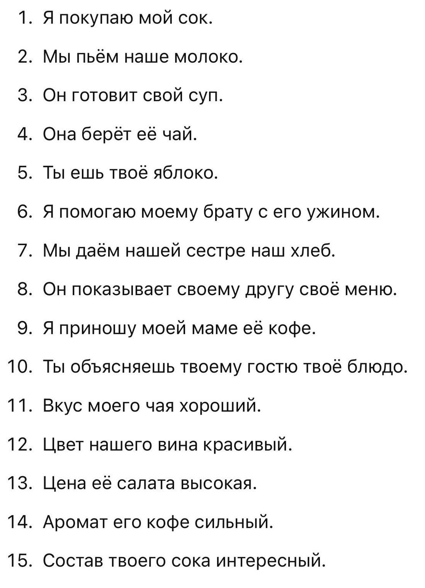
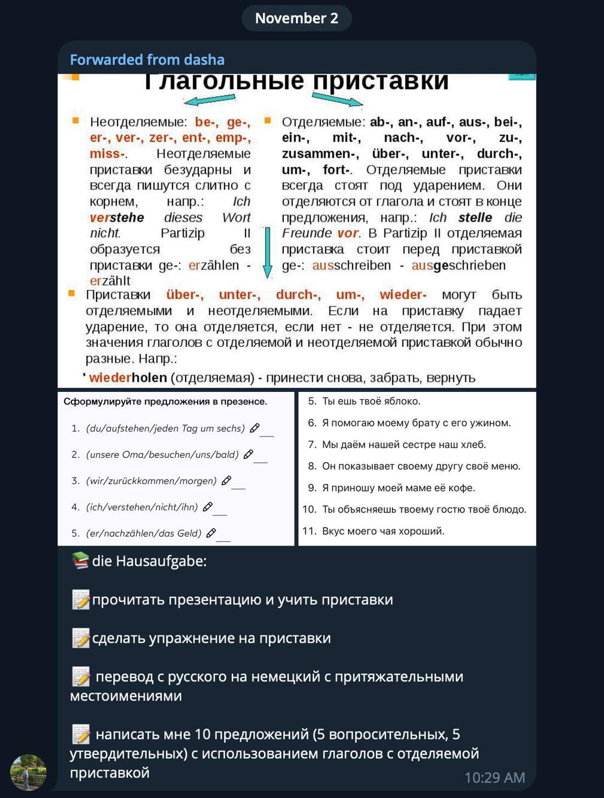

Повторяем отделяемые и неотделяемые приставки: как ведёт себя глагол в презенсе и с модальным, семейство hören (zuhören, anhören, aufhören, abhören…), приставки be-, er-, ge-, ver-…, глагол übersetzen в двух смыслах и «пары-антонимы» (auf/zu, an/aus, ein/aus). Потом — глаголы транспорта и разговор про Verkehrsmittel. Домашка: упражнение на приставки, перевод с притяжательными (15 предложений) и 10 своих предложений.
С прошлого занятия: отделяемые приставки — это ab-, an-, auf-, aus-, bei-, ein-, mit-, nach-, vor-, zu-, zusammen-, über-, unter-, durch-, um-, fort- (и zurück-). Ударение всегда на приставке. Многие из них пришли из предлогов (mit, vor, auf, zurück) и приносят своё значение глаголу — но бывает, что это просто новое слово, и его надо выучить.
Один и тот же корень — шесть разных смыслов. Даша: «грань очень тонкая, это приходит с опытом, бывают случаи, когда подойдёт и тот, и другой».
ärgern — злить: Das ärgert mich — «это меня злит» (на занятии это была реакция на громкую музыку).
be-, emp-, ent-, er-, ge-, miss-, ver-, zer- — приставки безударные, они всегда пишутся слитно с корнем и никогда не отделяются: это просто новый глагол. Даша: «мы знаем, что это приставки, но ничего с ними не делаем».
über-, unter-, durch-, um-, wieder- бывают и отделяемыми, и неотделяемыми. Если ударение падает на приставку — она отделяется, если нет — не отделяется. Значения при этом разные. Лучший пример — übersetzen.
Даша: «очень часто приставки образуют пары — их легко запомнить вместе».
Даша диктовала по-русски — надо было сказать по-немецки. Полина справилась почти со всем, спотыкалась на приставках при вопросе и на «закрыть» (она сказала aus, надо zu).
Глаголы с отделяемыми приставками очень часто описывают движение: ein-, aus-, um-steigen, an-kommen, ab-fahren, ab-holen. Даша: «почти всегда это про транспорт».
Сначала попробуй сам. Ответ — за кнопкой, вместе с пояснением.
Запись плохая — на телефоне почти ничего не слышно. Даша в конце подвела итог тремя предложениями:
Даша спрашивала Полину про её транспорт: что используешь часто, что никогда, что любимое. Слова — oft, manchmal, selten, nie.
Как было → как надо. Звук — только правильный вариант.
Прислана в Telegram 2 ноября. Поля можно заполнять прямо здесь — написанное сохраняется в браузере. У каждой строки «перевод» и «почему».
Слайд Даши — два списка: неотделяемые be-, ge-, er-, ver-, zer-, ent-, emp-, miss- (безударные, пишутся слитно, Partizip II без ge-) и отделяемые ab-, an-, auf-, aus-, bei-, ein-, mit-, nach-, vor-, zu-, zusammen-, über-, unter-, durch-, um-, fort-. Приставки über-, unter-, durch-, um-, wieder- могут быть и теми, и другими: ударение на приставке — отделяется, нет — не отделяется; значения разные (wiederholen).
Перевод — мой, не Даши. Русские предложения с её листа напечатаны в строках; свой вариант впиши в поле.
Пример структуры: утверждение — Ich stehe um sechs Uhr auf., вопрос — Wann stehst du auf? Мои примеры спрятаны — сначала напиши свои.

Презентация «Приставки»
Предложения в презенсе
Перевод: 15 предложений
Сообщение Даши💾 Всё, что ты напечатала, сохраняется автоматически в этом браузере. На другом устройстве не появится.
Все слова и фразы урока уже собраны в колоду ЗУБРа — с карточками, тестом, диктантом и расписанием повторений. Прогресс общий с остальными уроками.